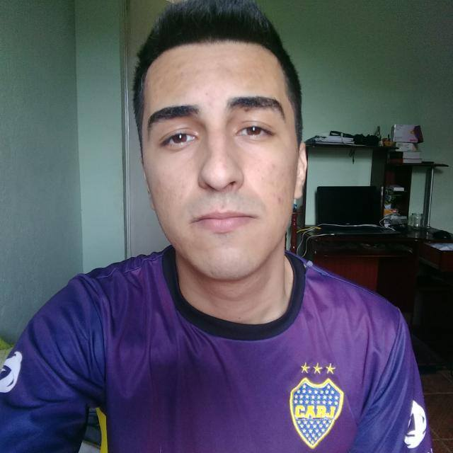

Gustavo Alves de Oliveira Duarte
Analista de Sistemas em Formação

Seja Bem-Vindo,
Sou estudante do curso de Sistemas de Informação no 7º Período, entusiasta
da área de Desenvolvimento Web e Mobile focando na Usabilidade
e baseando-a em User Experiêncie (UX) e User Interaction (UI).
Minhas Habilidades
Facilidade no desenvolvimento de websites com
Usabilidade baseada em User Experiêncie (UX)
e User Interaction (UI), elevando seu website
à um patamar de usabilidade com o
maior nível de qualidade e
satisfação entre os
usuários.
Usabilidade baseada em User Experiêncie (UX)
e User Interaction (UI), elevando seu website
à um patamar de usabilidade com o
maior nível de qualidade e
satisfação entre os
usuários.

Conhecimentos intermediários nas linguagens de
programação Java, JavaScript, HTML5 e CSS3.
Facilidade em usar os Frameworks de
programação Java MVC,
Bootstrap...
programação Java, JavaScript, HTML5 e CSS3.
Facilidade em usar os Frameworks de
programação Java MVC,
Bootstrap...
Minhas Experiências Profissionais
Prodemge - Companhia de Tecnologia da Informação
Atuo como Estagiário de Analista de Sistemas na empresa Prodemge à 6 mêses.Adquiri um conhecimento muito amplo na etapa de desenvolvimento de soft-
ware, desde seu pré-projeto até a fase de manutenção. As atividades exercidas
foram de especificação de requisitos e demandas, contemplando as técnicas
de elicitação de requisitos e especificando o mesmo para ser repassado
para toda a equipe de desenvolvimento.